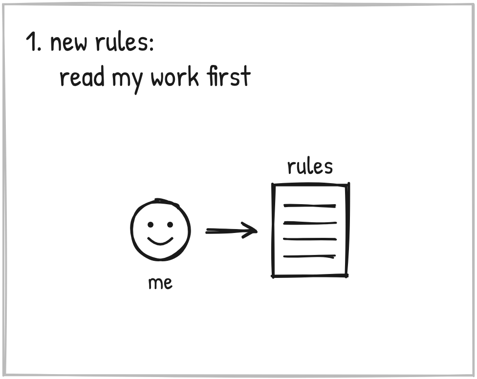
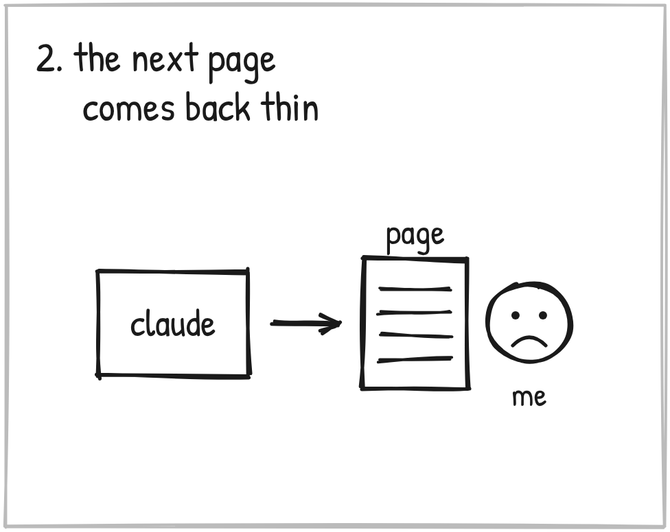
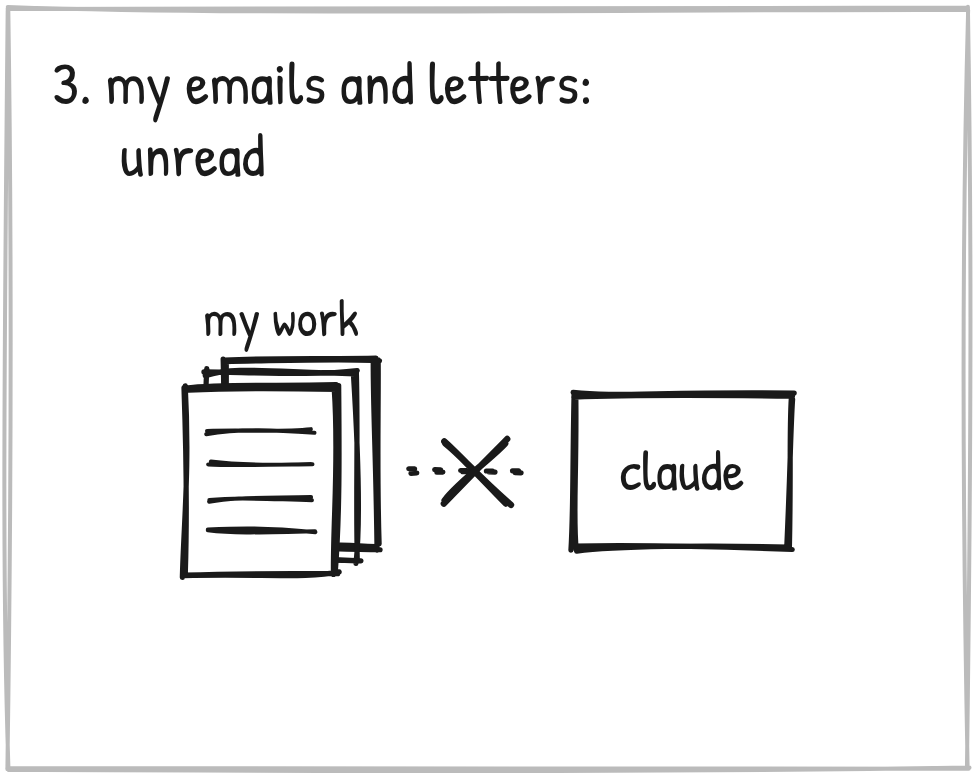
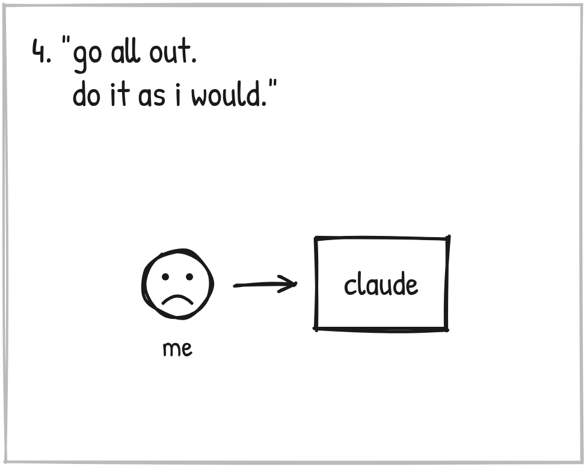
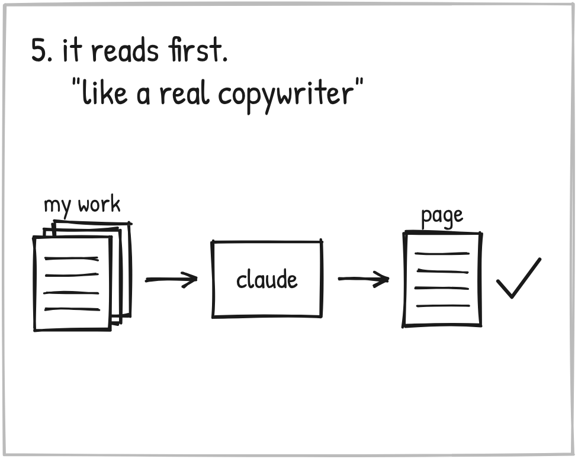
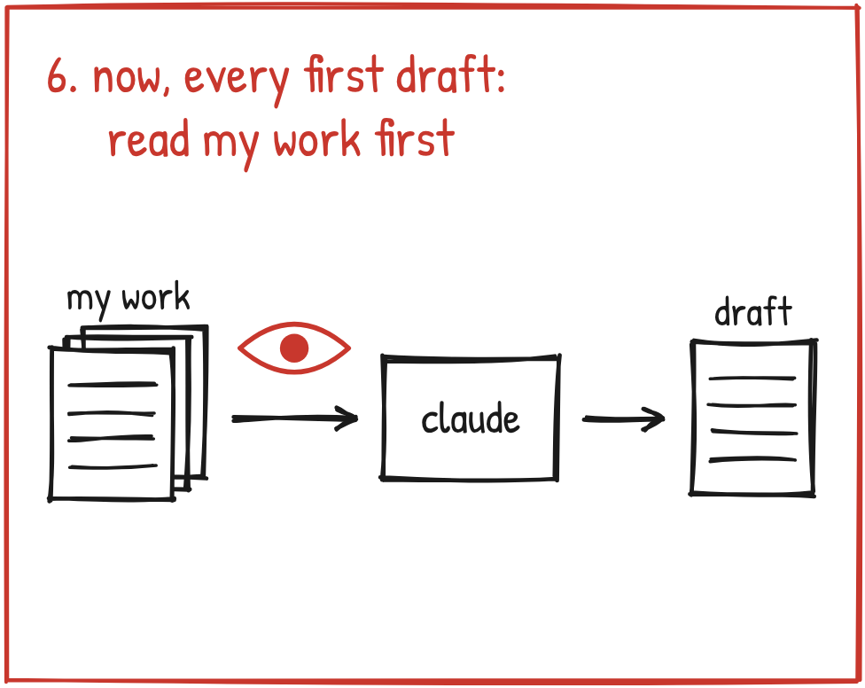

October 15. Late. A registration page for an event in Fishers.

The session before, we had restructured my whole set of instructions.
The new instructions said to read my emails and my letters before writing. To read the page cold, the way a stranger would.
You'd think that would do it.

The next page came back thin. Pass after pass, the same evening.
My own dictation, pasted in as the copy. Twice.
A story about an owner would give the fact and stop. It never got to what that means for the person reading.

And Jim. Jim bakes bread. The page gave his story as "a reason that had nothing to do with money."
The real story was sitting in the transcripts. His daughter. Fifteen tries. One loaf. The letters from customers.
Unread.
So I asked.
"Didn't we just update in the last session the prompt to exactly account for these things?"
"You have a vast resource of my email swipes, literally how I write and speak to people daily."
"And you did none of that, even though we just updated the prompt."

"I've shaped it. Now go all out. Do it as I would."
And I told it what thin work costs me. I end up reading every line. Which is the work I was trying to hand off.
"You're defaulting to lazy, thin work that requires me to read each line and then recognize it's lazy, thin work."

Claude went and read. My emails. My letters. The sources behind every story.
Then a fresh reader who had never seen the page read it cold, before I did.
The page came back.
"This looks and reads like a real copywriter, maybe even one named Daegan."
Same page. What changed was what got read first.
That's the whole lesson.
Thin work is NOT a writing problem. It's a READING problem.

That pass became the rule for every first draft. Read my own work in the same format, right then. Pull the real details of every story first. Two fresh readers before I see it. One line under the copy naming what got read.
Now, it didn't hold on its own.
Flat copy came back on October 25, and again on November 7 and 8. Telling it to read wasn't enough. What finally fixed that is Stage 6 of this log.
The lesson held, though.
Thin work is NOT a writing problem. It's a READING problem.
When your AI hands you something thin, don't fix the lines. Ask what it read.